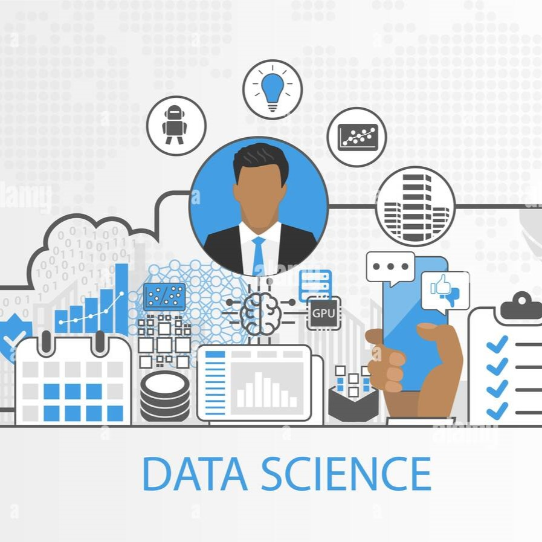

Data Science Course

Welcome to the Data Science course! Dive into the world of data science with comprehensive resources and in-depth modules designed for both beginners and professionals.
Course Overview
In this course, you will explore:
- Data cleaning and preprocessing
- Data analysis and visualization
- Machine learning algorithms
- Statistical modeling
Course Content
Module 1: Introduction to Data Science
Understand the basics of data science, its importance, and the roles and responsibilities of a data scientist.
Module 2: Data Cleaning and Preprocessing
Learn how to clean and preprocess data to make it suitable for analysis. This includes handling missing values, removing duplicates, and normalizing data.